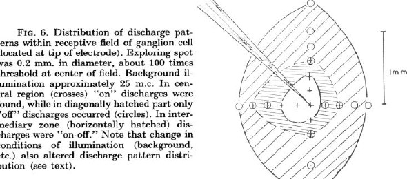
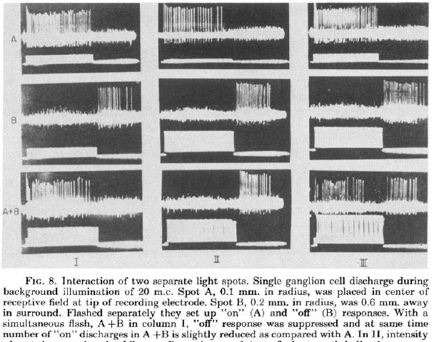
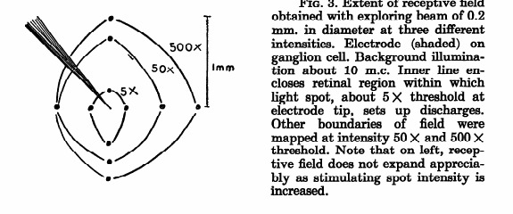
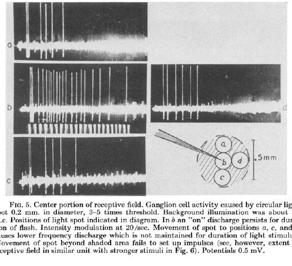
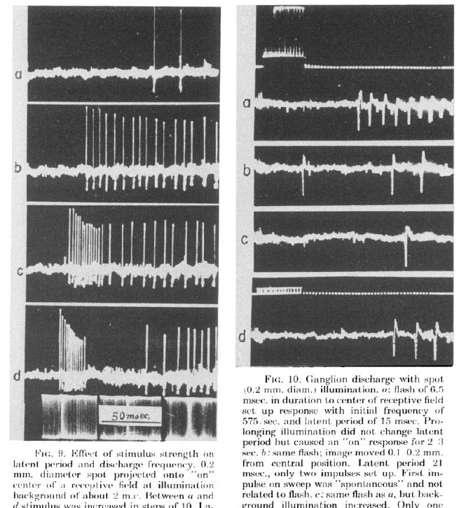

The retina is not a camera cable
Kuffler is studying the retina, the thin light-sensing sheet at the back of the eye. The old easy story would be: light hits a tiny spot, and that spot sends a simple message down one wire.
This paper says: actually, the first serious editing has already happened inside the eye. A single nerve cell is listening to a whole little neighborhood, and different parts of that neighborhood can argue with each other.
The magic map is center versus surround
Kuffler found that each recorded cell had a favorite middle zone and a surrounding ring that tended to do the opposite job.
For one cell, light in the middle might shout "light just came on!" while light around it might shout "light just went away!" Other cells flipped that arrangement.

Paper evidence: Kuffler's Figure 6 maps one ganglion cell's receptive field. Crosses mark on responses, circles mark off responses, and mixed symbols mark on-off responses.
The same cell can look like different "types"
Before this, people often talked as if a retinal nerve fiber was an on cell, an off cell, or an on-off cell. Kuffler shows that this can be misleading.
Move the light spot, make it bigger, change the background brightness, or wait for the eye to adapt, and the same cell can look like a different kind of cell.
Two spots can fight
Kuffler used two separate light beams. One spot could make the cell fire at light-on, while another spot could make it fire at light-off. When both were flashed together, one response could suppress the other.

Paper evidence: Figure 8 shows that two separated spots inside one receptive field can reduce or suppress each other's spike patterns.
TL;DR
Kuffler's big discovery is that the mammalian retina is already comparing light across space. A ganglion cell does not simply report "light here"; it reports a push-pull contrast between a center and a surround, shaped by brightness, adaptation, and timing.
The Question
What exactly does one optic-nerve output cell send to the brain?
Kuffler begins from a very direct premise: the optic nerve fibers carry all visual information leaving the retina, so understanding the discharge pattern of single retinal ganglion cells is a necessary step toward understanding vision.
Single retinal ganglion cell = one output neuron
Kuffler recorded one cell at a time. That cell's axon is one optic-nerve fiber carrying a message toward the brain.
Discharge pattern = when the cell fires spikes
It is not a picture. It is a time code: quiet, bursts at light-on, bursts at light-off, or both.
What the experiment asks
If one light spot changes this timing pattern, Kuffler treats that spot as part of the cell's receptive field and maps whether it causes on, off, or on-off discharge.
The paper asks whether mammalian retinal ganglion cells have fixed response types, such as on, off, or on-off, or whether those patterns are produced by a more flexible organization inside each receptive field.
Key Concepts
Click each card to expand the mechanism behind the term.
Interactive Widget
Move the spot and change illumination conditions to see why the same cell can look like different response types.
The small spot mostly lands in the on-center, so spikes appear during the light flash.
Method
The experiment was a carefully controlled bench for drawing a functional map of one ganglion cell at a time.
Results
The headline result is not one number. It is a map plus a balance rule.

Figure 3: with a 0.2 mm exploring spot, stronger stimuli expanded the mapped receptive-field boundary from about 5 times threshold to 50 times and 500 times threshold.

Figure 5: the same small spot produced a strong maintained on discharge near the center, but weaker or absent responses when shifted away from it.
Figure 6: Kuffler's canonical map. The central region gave on discharges, the surround gave off discharges, and the transition zone gave on-off discharges. Other cells could reverse center and surround polarity.
Figure 8: spot A and spot B each evoked a response alone. Together, they could suppress the off response, suppress the on response, or mutually reduce each other depending on relative intensity.
Two-Spot Interaction Board
This is Figure 8 translated into a controllable mental model.
Latency And Frequency
Kuffler used spot specificity to expose very fast retinal discharge behavior.
When Kuffler flashed a 0.2 mm spot into an on-center region, stronger stimulation shortened latency and increased discharge frequency. In Figure 9, latency moved from 93 msec near threshold to 15 msec at the strongest illustrated condition, with a peak frequency over 800/sec.
He also emphasizes that larger or stronger stimuli can produce apparently anomalous effects. If the added light recruits an opposing surround, the response can be delayed, weakened, or even shifted toward a different pattern.

Figures 9 and 10: high-frequency bursts and shorter latent periods appear when stimulation is concentrated on the relevant receptive-field region.
Implications
Why this paper became a foundational retina result.
If you study vision
Visual processing starts inside the retina. The optic nerve already carries contrast-shaped, context-sensitive messages.
If you build models
A simple pixel-to-wire model misses the push-pull local comparison. Center-surround filters are a natural computational abstraction.
If you read old physiology
Labels like on, off, and on-off can be experimental outcomes, not permanent cell identities. Always ask what part of the field was stimulated.
Limits
Kuffler is careful about what the method can and cannot prove.
Quiz
Three checks for whether the mechanism has clicked.
1. Why does Kuffler avoid calling a ganglion cell simply an "on fiber" or "off fiber"?
2. What usually happens to the surround contribution under higher background illumination?
3. In Figure 8, why can flashing two spots together reduce a response that either spot evokes alone?
comment/feedback
Local review is wired through the repository feedback runtime.
Use the feedback panel to highlight text, select page elements, attach notes, and submit a batch. Submitted comments are written locally for Codex to process against this explainer.
Open the panel
Use the floating feedback button, or the button below, to bring up the review panel.
Attach a note
Highlight confusing text or select a visual block, then describe what should change.
Submit batch
The local server appends feedback to kuffler-1953-retina/feedback/inbox.jsonl.
papers/kuffler-1953-retina/feedback/inbox.jsonl